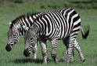
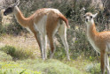

Notes and recordings from a 410 days long trip around the world
Longer trip notes, links to photos, recorded sounds, maps etc., grouped by continent:
|  | Africa: Kenya, Uganda, Rwanda, Tanzania, Malawi, Zambia, Botswana, Namibia, South Africa | 89 days in July–October 2009 |
|  | South America: Brazil, Peru, Ecuador, Bolivia, Chile, Argentina | 145 days in November 2009 – April 2010 |
| Oceania: Rapa Nui, French Polynesia, New Zealand, Australia, Papua New Guinea | 37 days in April–May 2010 | |
| Asia: Indonesia, Malaysia, Thailand, Laos, Vietnam, Cambodia, India, Hong Kong, Macau, China | 135 days in May–September 2010 |
For short and more real-time messages, see the blog.
As this is a travel blog (= almost every post is made in and describes a distinct location), we have assigned a pair of longitude/latitude coordinates to almost every post. Because the Blogger interface only supports search by keyword and date, we have additionally cast the whole blog into KML to make it browsable on Google Earth (kml) and Google Maps (map):
Note that the blog does not cover messages from Africa where we used Twitter instead, see the Africa tweets.
3143 photos are hosted by Picasaweb at http://picasaweb.google.com/trip20092010. These constitute approx. 10% of all the photos that we have taken during the trip. The photos in the Picasaweb-selection have been downscaled (mostly to 1000 pixels on the longer side) but not cropped nor modified in any other way after capture.
The following tables list all the photos with their captions.
The photos are arranged into 57 albums. Each album depicts a location, usually a consecutive period of time in that location. No album overlaps with another album. The photos in each album are ordered in temporal sequence.
Each photo is assigned zero or more tags, e.g. the food-tag is given to all the photos that depict food, thus enabling one to quickly locate all such photos, even if they occur in different albums. The tags are:
385 short films (4–276 seconds long) are hosted by YouTube — Africa videos at http://www.youtube.com/nairobicapetown, all other videos at http://www.youtube.com/trip20092010.
These lists reference all the videos:
Mail/Buzz: trip20092010@gmail.com • Blog: http://trip20092010.blogspot.com/ • Photos: http://picasaweb.google.com/trip20092010